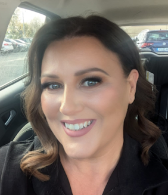

Laura Cushen - Professional Vocalist

Laura C is a professional singer songwriter from Dublin, Ireland. Singing since the age of two, driven with a passion inherited from her father, she trained in the Bel Canto School of music in Dublin. With a true passion for songwriting and performing, her songs are her perspective on real life, real love and real feelings.
Her influences include everything from Soul, Motown, Pop all the way to Irish Traditional and Folk music.
She has performed in various venues throughout Dublin such as; The Button Factory, the National Concert Hall and the Helix Theatre, Dublin. She even performed with her gospel choir for the Pope on his visit to Ireland in 2018!
You can see and hear Laura in action with a selection of videos showing her doing what she does best on social media @lauracushensings. She loves performing for her audience, with a real passion for her craft.
Her amazing and toe tapping debut single ‘The Christmas Table’ was released on all platforms in November 2024. Many Irish radio stations enjoyed playing it during the festive season.
Her second single ‘Make Each Day Better’ was released on Valentine's day, February 14th 2025. This song received a wider audience, having demonstrated her soul sound that is unique to the Irish music scene.
Her much anticipated latest single 'Unravel' will be released on June 1st 2025.
Laura believes music can bring much needed joy, hope and inspiration to all and can truly heal the soul.
She is available for interview and looks forward to hearing from you.